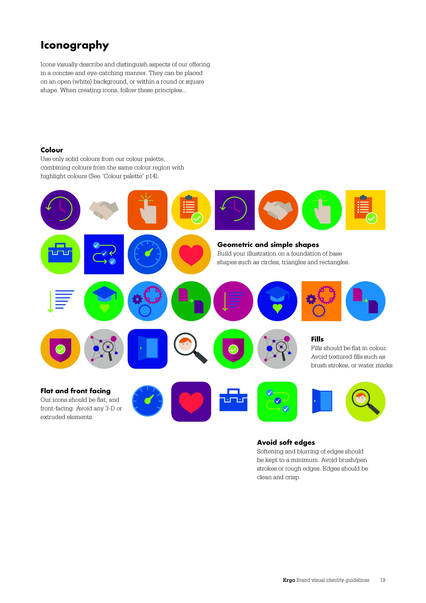
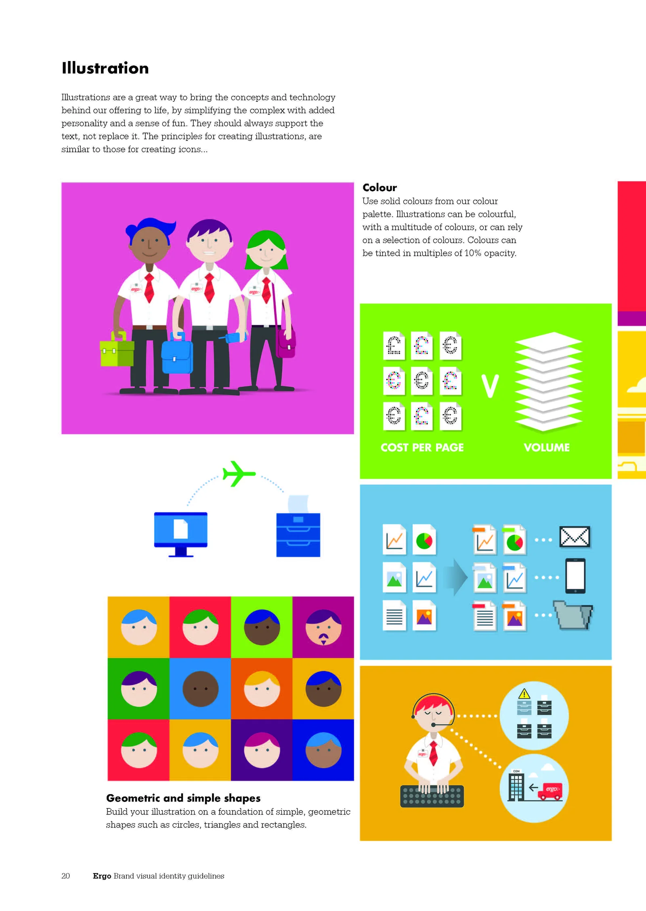
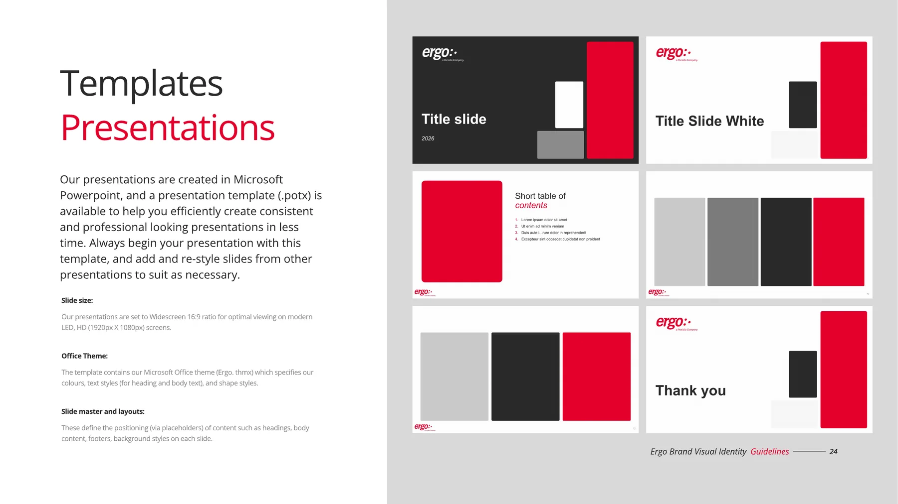

A colour wheel nobody could run day to day, rebuilt as one system three brands could share.
The 2017 guidelines had too much to keep up with.
The inherited 2017 guidelines carried a colour-wheel concept that mapped services to colours, but it had never been operationalised.


Each brand kept its own colour and mark.
Absorbing Micromail and BoatyardX into Ergo would have thrown away the recognition they had built up in Ireland. So I designed an endorsed-brand system. Each brand keeps its own colour, and everything else is shared.
Each brand leads with its own colour.
Ergo, Micromail and BoatyardX each take the 10 in turn, on a shared 60 neutral and 30 grey.
Ergo leads
Micromail leads
BoatyardX leads
Locked: grid, arc and ribbon language, Open Sans, icon set, photography rules, logo placement.
A neutral base, with each brand’s colour on top.
The shared core goes neutral so high-chroma accent colours can coexist without clashing. I built and maintained the system for Ergo and Micromail, and every deck, social post and piece of collateral for both came from it. BoatyardX kept its own design agency.


The same seven colours, in different positions.
Every book uses the same values. Each company reads itself as the lead and its siblings as supporting cast, with no hierarchy imposed from the parent. A fourth company would only need one added colour.
Each brand has its own mark.
The mark scales up into a background pattern. A new brand would need a mark and a colour, nothing more.
What happened next.
Carried the transition
In the Becomes campaign, each brand colour resolved into Presidio blue. The system led the change, then retired.
Adopted by BoatyardX
BoatyardX had its own design agency. They took on the same terminology, palettes and fonts.
Led into Presidio
Ergo becomes Presidio was the last campaign built on this system.
Three projects, one logic.
The tri-brand system is the rule. Ergo becomes Presidio breaks it on purpose, for a transition. Stronger Together makes the same vector-over-photography move for an event.